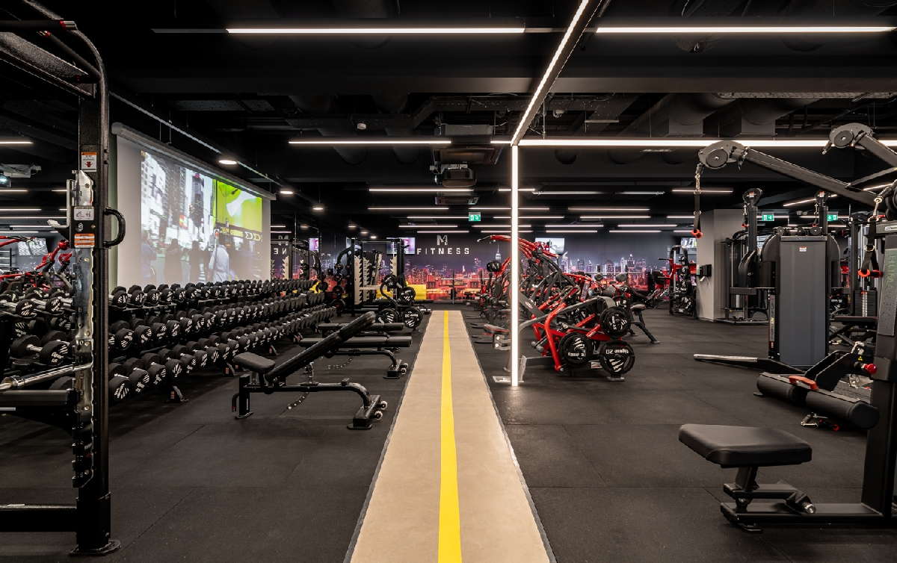

A testépítés nem csupán a súlyok emeléséről szól, hanem a fegyelemről, a táplálkozásról és a megfelelő pihenésről is. Ez egy életforma, amely segít az egészség megőrzésében és a fizikai erőnlét növelésében.
Íme néhány alapgyakorlat, amit minden kezdőnek érdemes ismernie:
| Nap | Izomcsoport | Időtartam |
|---|---|---|
| Hétfő | Mell - Tricepsz | 60 perc |
| Szerda | Hát - Bicepsz | 70 perc |
| Péntek | Láb - Váll | 90 perc |
| Hétvége: Pihenőnap | ||
A fejlődés kulcsa a progresszív terhelés: Púj > Prégi
Megjegyzés: Mindig figyelj a helyes kivitelezésre a sérülések elkerülése érdekében!

Ha többet szeretnél tanulni, látogasd meg ezeket az oldalakat:
ShopBuilder - Edzési tippek
Írj az edzőnknek!
Készítette: [Aggod Ádám]